NO. 091 · sightedlogged 2025
BLUE APRON
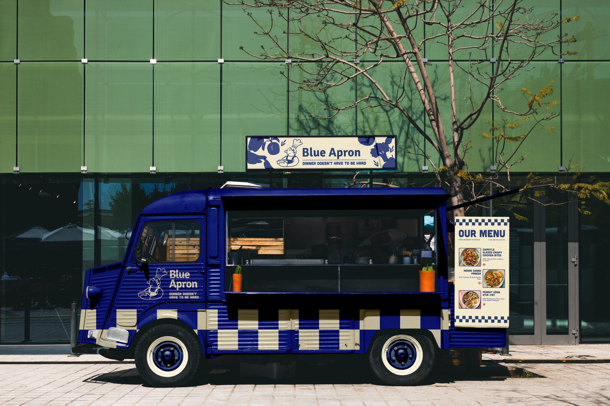
The whole story: research, idea, decisions and all.The short version, focused on the finished work.
OVERVIEW
What is it?
A conceptual advertising campaign for Blue Apron, developed in an advertising course. Our team’s research showed that 18 to 24 year olds make up just 1% of meal kit customers, so we proposed a food truck pop-up that travels from campus to campus. I led the branding and creative direction, shaping the campaign’s visual identity and its experiential advertising.
- Project
- Blue Apron campus campaign (conceptual)
- Type
- Branding / Advertising Campaign / Experiential
- Role
- Branding & Creative Direction, all campaign visuals
- Team
- Elize Cardona, Kaija Hjelm, Suprina Kabadkar, Cecilia Wong
- Tools
- Photoshop, Illustrator
- Context
- Advertising course, group project
THE RESEARCH
The project was research first. Before anything was designed, our team wrote a full situational analysis covering Blue Apron’s brand, pricing, competitors, customers and a SWOT. Three findings shaped everything that came after.
An audience no one was talking to
18 to 24 year olds make up just 1% of meal kit spending. Most advertising is aimed at busy parents and professionals.
Customers don’t stay
Roughly 85% of one group of new Blue Apron customers had left within a year. Winning people over needed more than a discount code.
A brand opening up
Blue Apron had just dropped its subscription requirement, which suits students who want flexibility, quick meals and things worth sharing with friends.
THE IDEA
Blue Apron has no storefronts, so students never get to taste it before paying. We proposed a branded food truck that visits campuses twice a week through the first eight weeks of the fall semester, serving Blue Apron meals with student discounts on the spot. A campus ambassador program and social media carry it between visits, all under one message: “Dinner doesn’t have to be hard.”
The brief only asked for a written plan, but our team was full of designers, so we decided to show the campaign as well as describe it. I took the lead on how it would look.
APPROACH
What did we find, and what design decisions did I make?
- The research
- 18 to 24 year olds are just 1% of meal kit customers, and Blue Apron had just dropped its subscription requirement.
- The idea
- A food truck that tours college campuses, so students can taste the meals first, backed by an ambassador program and social media.
- Design decisions
-
A friendlier Blue Apron
A cheerful chef mascot and rounded type make the brand feel made for students.
Diner checkerboard
A checkered band ties the truck, menu and posters to food truck and diner culture.
Blue, warmed up
Blue Apron’s navy stays, with orange and cream added for energy.
IDENTITY
A primary horizontal lockup, a vertical lockup and a round emblem, each in navy and cream.
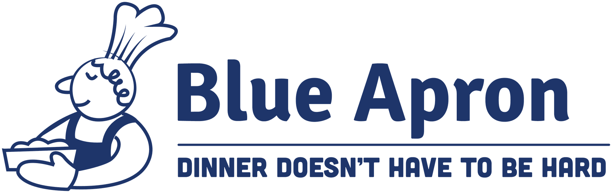
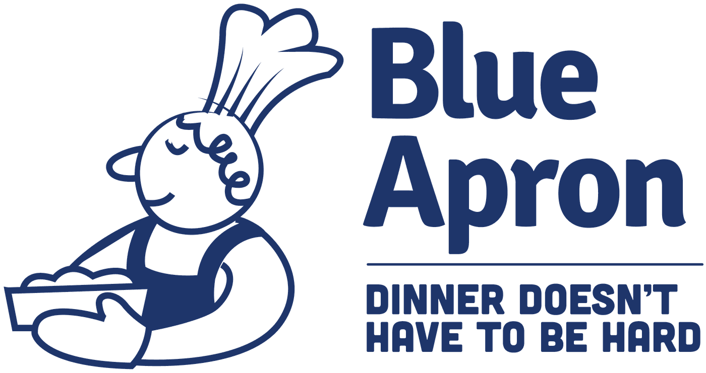
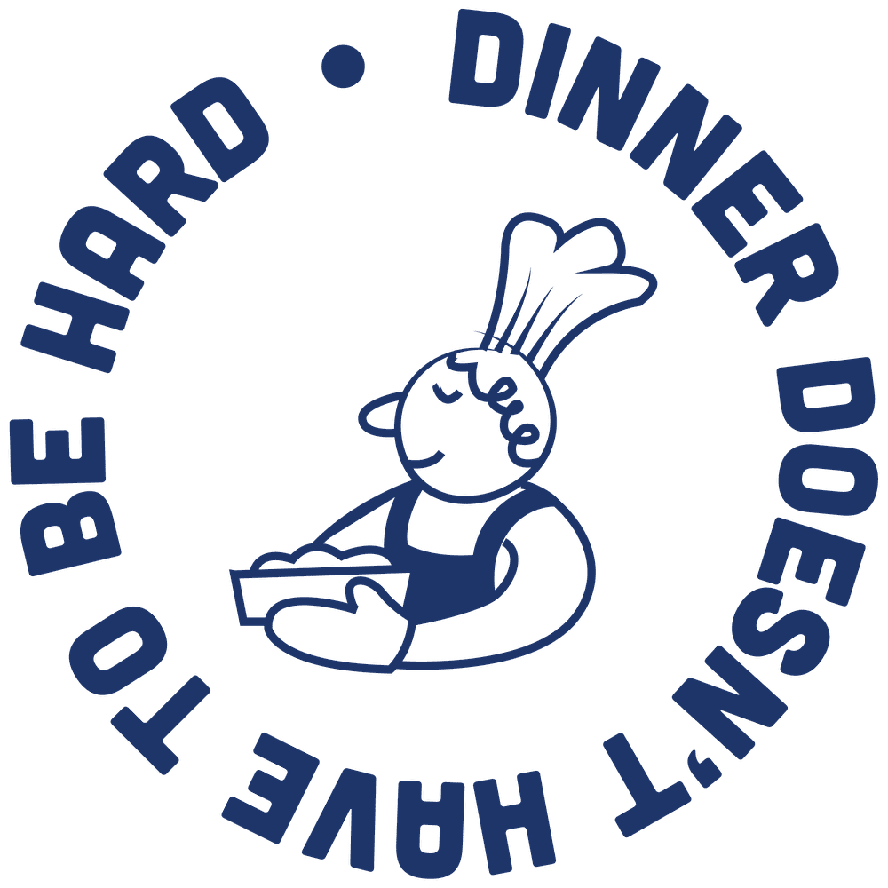
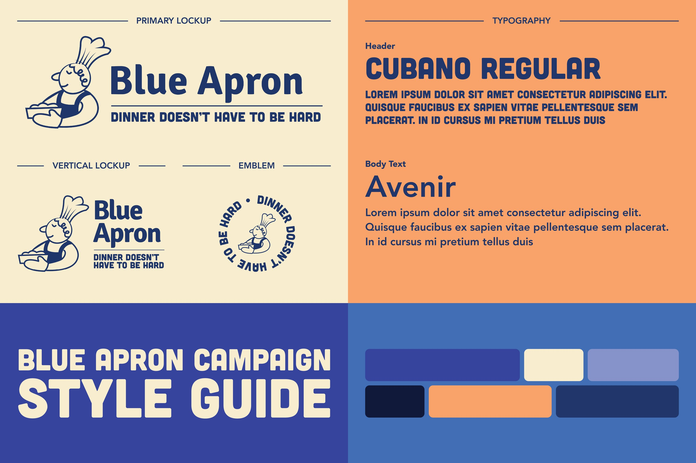
ON CAMPUS
Posters announce the truck’s grand opening and recruit student ambassadors; the fold-out menu travels with the truck.
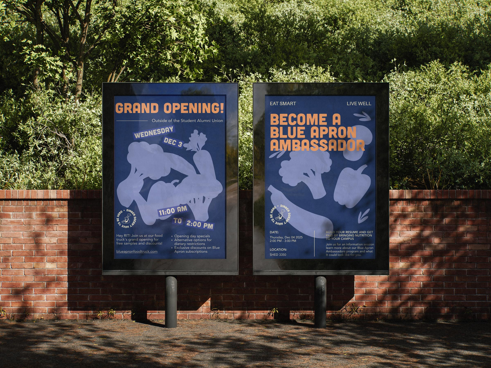
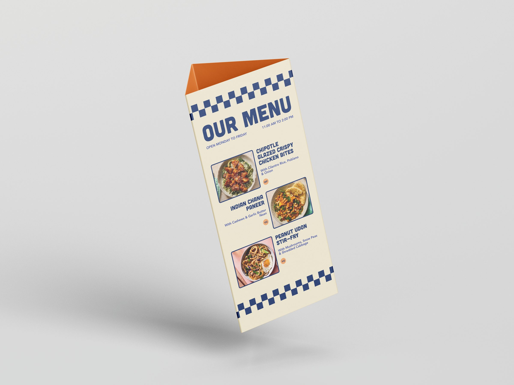
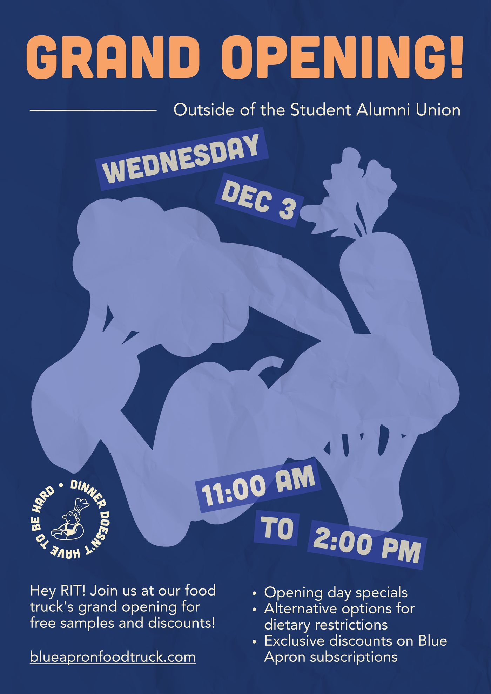
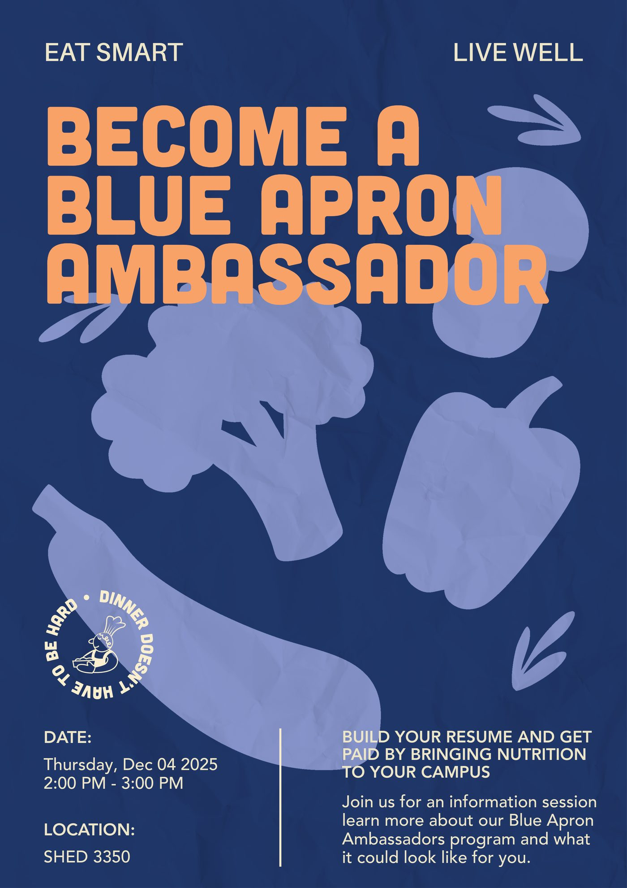
DESIGN DECISIONS
A friendlier Blue Apron
Blue Apron’s real branding is clean and grown-up. For students it needed more personality, so I built the identity around Suprina’s cheerful chef mascot and paired it with Cubano, a chunky rounded display face.
Diner checkerboard
A navy and cream checkered band runs along the truck, the menu and the posters. It nods to diners and food truck culture and makes every piece recognisable from across a quad.
Blue, warmed up
I kept Blue Apron’s navy so the brand stays recognisable, then added orange, cream and a soft periwinkle to make it feel warmer and younger.
Fresh ingredients, front and centre
Oversized vegetable silhouettes fill the posters. They carry Blue Apron’s promise of fresh ingredients while staying playful enough for a campus bulletin board.
REFLECTION
What did I learn?
I didn’t have the official title of creative director, but I ended up steering how the whole campaign looked, which meant building a system clear enough for five people to work in. Starting from research made the design decisions easier to defend: every piece traces back to who we were talking to and why they hadn’t been reached yet.